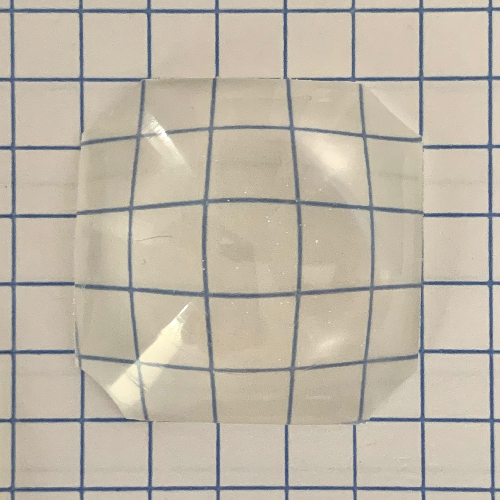
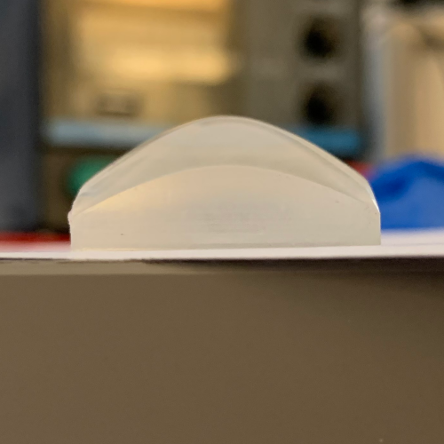
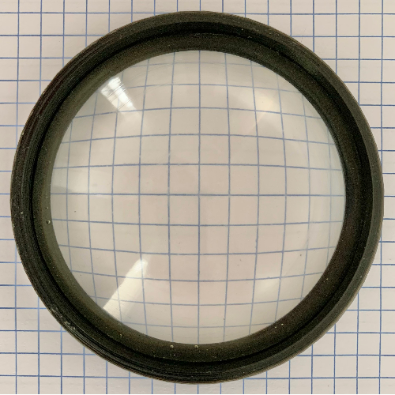

Spherical Limits and Hyperbolic Lenses
Alex Bock 2022-08-17
Background
Two common topics that often arise when photographers chat about fast lenses are the famous Zeiss 50 mm ƒ/0.7 lens and the commonly repeated photography "folklore" that the maximum possible f-number for a lens is ƒ/0.5.
The Zeiss 50 mm ƒ/0.7 continues to be admired for its large maximum aperture because even more than fifty years after its short custom production run, there are no lenses matching this speed commercially available for photographic use on standard full-frame camera bodies. The fastest autofocus lenses available for DSLR and mirrorless cameras have ƒ/1.2 or ƒ/1.0 maximum apertures. Several manual focus lenses with ƒ/0.95 maximum apertures are also available, but entries in this category are either moderately expensive novelties with poor image quality wide open, or sharp wide open but exceptionally expensive statement pieces.
As for the often-claimed f/0.5 limit, I imagine that long ago a photographer may have asked someone how large the aperture of a lens could be, and received an answer in the spirit of "For a lens that is practical to manufacture, the limit is f/0.5.", which lost its nuance in every retelling until it took the form often encountered today. The key aspect forgotten over time in this hypothetical origin story is the constraint on being "practical".
Starting With Spheres
What makes a lens practical? First, historically, the constraint that a lens is practical to manufacture would imply that the lens uses only spherical surfaces. One would also expect the lens to be made of glass and used in air (as opposed to underwater or in an oil immersion microscope). From these axioms, the lensmaker's equation can be used to find the maximum aperture geometrically possible for a spherical lens in air made of glass with a given refractive index.
The maximum possible diameter D of a single spherical lens surface is twice its radius of curvature. This is a direct geometrical limitation. The shape of a spherical lens surface is a slice cut off of a sphere whose radius is the lens surface's radius of curvature. The diameter of the resulting lens surface is determined by how far from the center of the sphere this slice occurs. The largest possible lens surface diameter is obtained by cutting the sphere in half exactly at the center, giving the lens surface the shape of a full hemisphere and a diameter equal to the diameter of the sphere (which is twice the radius of curvature). Simply, D=2R.
The concept of a lens with the largest possible aperture can be equivalently thought of as a lens with the largest possible diameter for a given focal length, or as a lens with with the shortest possible focal length for a given diameter. This last phrasing in particular suggests that we consider a lens with two strong, convex surfaces to achieve the minimum focal length. (A "strong" surface here meaning a surface with a small radius of curvature and a corresponding short focal length.) Further, as both surfaces of this biconvex lens have the same diameter and each has the smallest possible radius of curvature, then the two surfaces will be equivalent to each other meaning the lens is more specifically equiconvex. As we are dealing with an equiconvex lens and have now determined that each surface is a hemisphere, the complete lens will be an entire sphere (generally called a "ball lens" to distinguish it from all other spherical lenses).
If we start with the lensmaker's equation and the knowledge that we are constructing a equiconvex lens, then for a lens with focal length f made of material with a refractive index n and two convex surfaces each with a radius of curvature of magnitude R:
The f-number of the lens is N = f / D = f / (2R), and so:
At which point we find that the f-number of a ball lens depends only on the index of refraction. (Note that R does not disappear in this manner when moving beyond the realm of photography and calculating numerical aperture instead of f-number.)
Taking the limit of N(n) as n approaches ∞ using L'Hôpital's rule immediately yields the result that no matter how high the index of refraction of the material is, the maximum possible f-number for the ball lens would be limited to f/0.25. In practice, the refractive index of real materials that transmit visible light fall rather short of approaching infinity; they hardly even approach three. Here is a small table of results for refractive indices within the range of some real materials:
| Material | Refractive Index | Max f/# |
| Crown Glass | 1.5 | f/0.75 |
| Flint Glass | 2.0 | f/0.5 |
| Diamond | 2.4 | f/0.43 |
With a deliberate selection of the highest index flint glass available, we see an instance of the infamous f/0.5. Further, the focal length f determined above was measured from the principal plane of the lens, which coincides with its center in this case. This means that we cannot take a ball lens higher than n=2 (f/0.5) while maintaining a requirement that f ≥ R for imaging. This is one of several good reasons that your camera lens is not built using large spherical diamonds.
If the first surface of a diamond ball lens is already "too strong" alone, why not simply cut the lens in half to form a planoconvex half ball lens with an external focus? Unfortunately, the high refractive index will cause internal reflection to limit the usable aperture. It's probably best to move on from diamond now, as this section started with motivation from practical lens manufacturing and it is now only narrowly avoiding a segue into positive meniscus lenses made of diamond.
At this point I must note that mainstream DSLR and mirrorless cameras all have their own limits on the maximum usable f-number imposed by the mount diameter and flange distance. This limit is around f/1 for typical DSLR mounts and around f/0.6 for typical mirrorless mounts.
In any event, it's nice to see where f/0.5 came from for spherical glass lenses, but most commerical camera lenses now contain at least one aspherical element. Can an aspherical lens reach a faster f-number?
Aspherical Lenses
The extent of a spherical lens is limited because the curve closes on itself. In contrast, a parabolic or hyperbolic surface does not have the same inherent limit on diameter; these functions permit computing the height (sag) of a point on the lens regardless of how far it is from the center. The practical limit in this case is when increasing the diameter further will make a lens too thick. A prolate elliptical surface falls in between these two groups, curving more gently than a sphere but still re-joining itself to enclose a finite area.
For example, this spherical lens is very thick and exhibits severe spherical aberration compared to the prolate elliptical version:
Homemade Hyperbolic Lenses
This is a 10 mm f/0.4 planoconvex hyperbolic lens produced using the process I previously described here for producing lenses from a 3D-printed shape:
 Of course, I was also obligated to make my own 50 mm f/0.7 lens. This is a single planoconvex hyperbolic lens. It is thinner and provides better image quality than a 50 mm f/0.7 spherical singlet lens. However, its softness and chromatic aberration pose absolutely no threat to the eight element Zeiss lens.
This lens is made of cast epoxy resin with a refractive index of only about 1.5. The conic constant K is about -2.3.
I haven't made a focus barrel/camera mount for this lens yet, but here a few quick handheld freelens shots of a cactus from my 50 mm f/0.7 in front of a Nikon F-mount APS-C camera body:
If you're wondering about choosing a conic constant, K = -n2 optimizes a planoconvex singlet for use as a telescope objective.
Back to Index